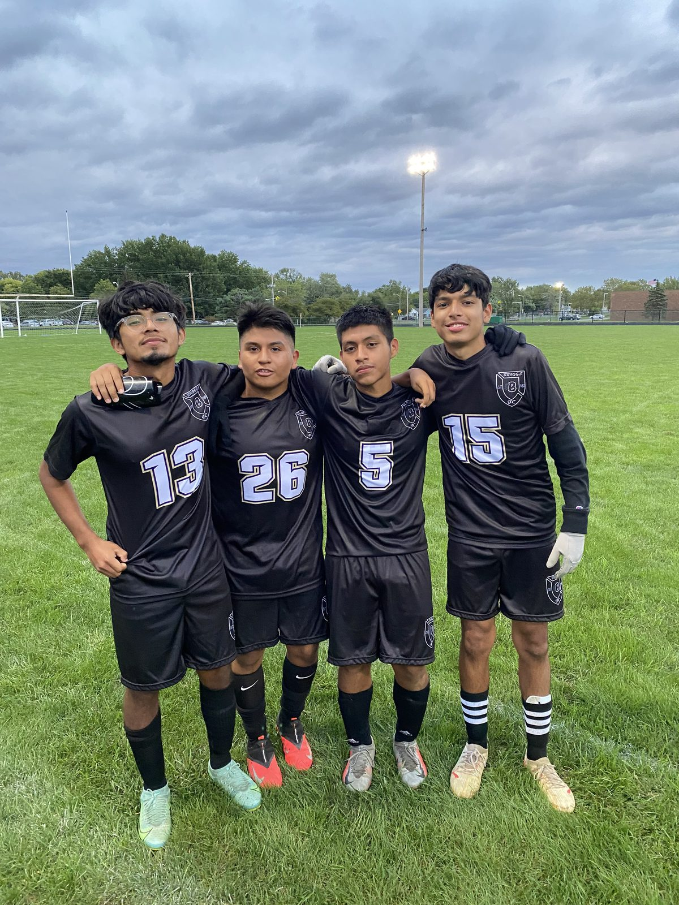
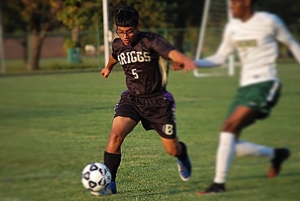
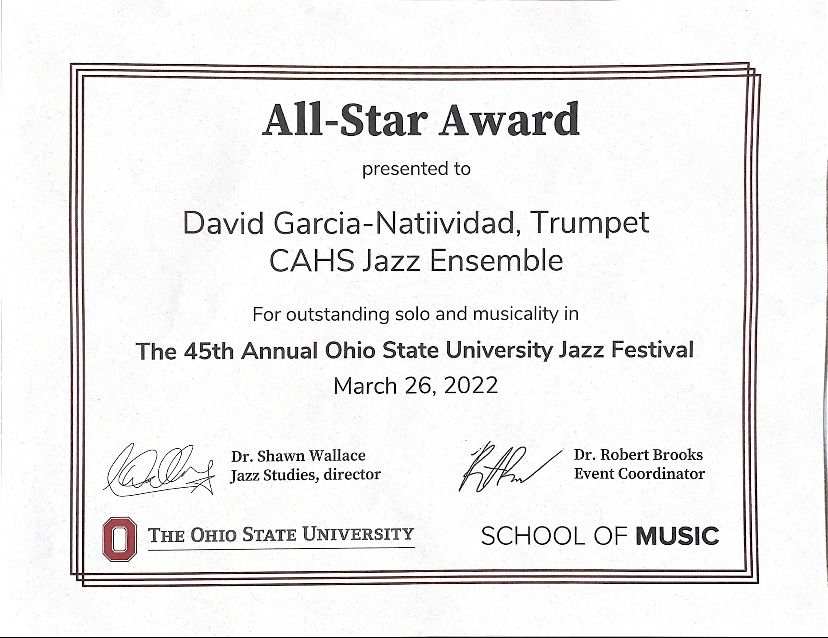

Adriana is my older sister and a Civil Engineering Analyst on Kimley-Horn’s Land Development team in the Chicago area, where she works on residential, commercial, educational, medical, retail, and mixed-use projects. She graduated from the University of Dayton in 2024 with a civil engineering degree focused on infrastructure and serves on the Scholarship Committee of Commercial Real Estate Women (CREW) Chicago. Outside of work, she explores the city’s food and architecture, stays active, travels, and catches up on shows and movies.
A time when David was at his best was during high school. Throughout those years, he demonstrated ambition, leadership, and strategic thinking. From his freshman year onward, David was not only academically successful but also worked on improving his skills in soccer and band while maintaining strong connections with his peers, family, and community. These qualities remained consistent through his senior year, when he graduated and moved away for college.
During soccer season, David went beyond the expectations of scheduled school practices. He organized scrimmages and games at a local community park, creating additional opportunities for himself and others to develop their skills. He also practiced independently during his free time to maintain his endurance and continue improving as a player. His initiative demonstrated not only his dedication to personal growth, but also his ability to bring people together. His peers respected him as a young leader and saw him as someone who created an inclusive and supportive environment.
At the same time, David was also a dedicated member of the school band, where he played the trumpet. He consistently set aside time on weekends to rehearse independently and would even offer to perform for his family. His ability to balance these commitments demonstrated a strong sense of responsibility and maturity. Even at a young age, David understood the importance of following through on his responsibilities and honoring the commitments he made.
Above all, David prioritized his academic growth. His curiosity was one of the qualities that set him apart from his peers. He studied every day and frequently went beyond the expectations of his coursework by exploring subjects and topics outside of his required curriculum. David held himself to high standards, set meaningful goals for himself, and consistently worked toward achieving them.
Overall, David’s high school years demonstrated what he is capable of when he is focused, motivated, and at his best. He showed discipline, initiative, emotional intelligence, curiosity, and analytical thinking. Not only did he demonstrate these qualities in only one area of his life, but he applied them consistently across academics, athletics, music, relationships, and his community. His ability to pursue his goals while remaining connected to and supportive to those around him was one of the clearest examples of David at his best.


